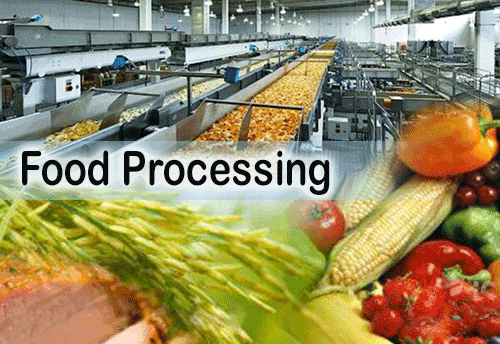

Food Processing is one of India’s sunrise sectors and is vital to the country’s development, bringing together agriculture and industry.
Under Make in India, the Ministry of Food Processing is assisting 135 integrated cold chain projects while 7 Mega Food Parks were operationalized.
Each food park creates 5,000 jobs and benefits 25,000 farmers.
The industry is also at the forefront of ease of doing business reforms, from a single dedicated investor facilitation cell to custom clearance reforms.
